はじめに
Autonomous Database (ADB) にはさまざまなツールが同梱されており、簡単にご利用いただけますが、 Oracle Analytics Desktop を使うと、ユーザーのPC上から Autonomous Database のデータを見える化できます。
Oracle Analytics Desktop は、デスクトップ・アプリケーションであり、データの探索および見える化するためのツールです。複数のソースからサンプル・データを簡単に検索したり、ローカルのデータセットを分析したり調査することが可能です。
Autonomous Database は暗号化およびSSL相互認証を利用した接続を前提としており、そのため接続する際はクレデンシャル・ウォレット（Credential.zipファイル）を利用する必要があります。
本章ではこのOracle Analytics Desktopを使用した Autonomous Database の見える化について確認していきます。
前提条件
- ADBインスタンスが構成済みであること
※ADBインタンスの作成方法については、101:ADBインスタンスを作成してみよう をご参照ください。 - クレデンシャル・ウォレットを取得済みであること
※クレデンシャル・ウォレットの取得については、104:クレデンシャル・ウォレットを利用して接続してみよう を参照ください。 - Oracle Analytics Desktop は、Windows OS用とMac OS用がありますが、本章ではWindows OS用 を使って説明します。
- Oracle Analytics Desktop をインストールするPCから、プロキシ・サーバーを経由せずに、直接、インターネットに繋がること。
※Oracle Analytics Desktop はプロキシ対応できません。
目次
- 1. Oracle Analytics Desktop をダウンロードする
- 2. スクリプトをSQLワークシートから実行してビューを作成する
- 3. Oracle Analytics Desktop から ADB に接続し、データを見える化する
所要時間 : 約30分
1. Oracle Analytics Desktop をダウンロードする
Oracle Analytics Desktop (OAD) をダウンロードします。
-
次のサイトから、Oracle Analytics Desktop のインストーラーをダウンロードします。
-
OADダウンロードサイトから、ダウンロードをクリックします。
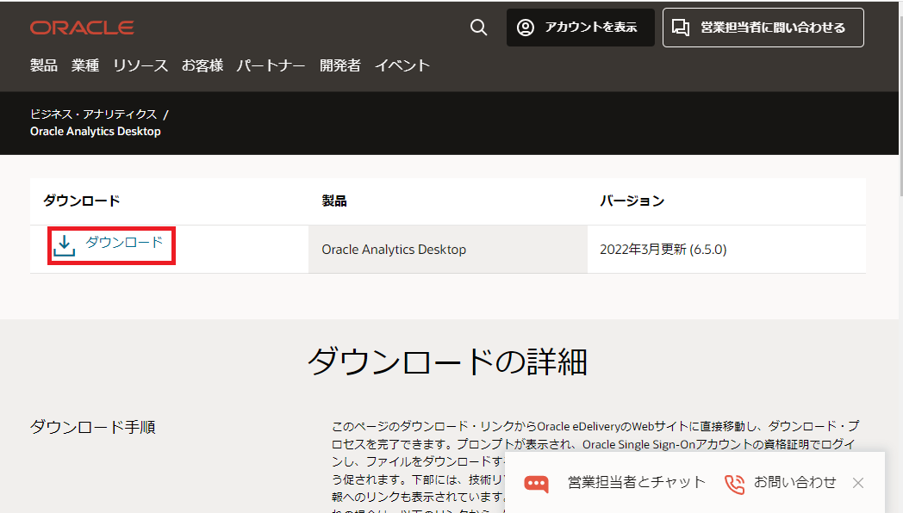
-
Oracleログイン画面が表示されるので、Oralceプロファイルを入力します。Oralceアカウントをお持ちでない場合、下の プロファイルの作成 をクリックして、Oralceアカウントを作成します。
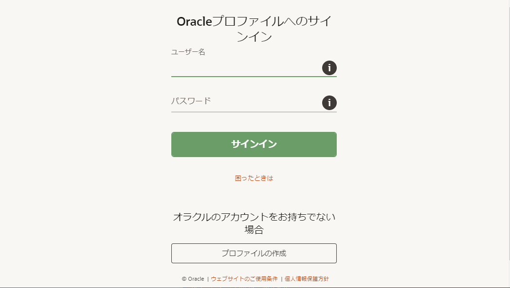
-
ダウンロード画面が表示されるので、Platforms から Microst Windows x64 (64bit) を選択し、ライセンス許諾のチェックボックスを チェック して、 zipファイル をクリックします。すると、インストーラーがダウンロードされるので、任意の場所に保存します。
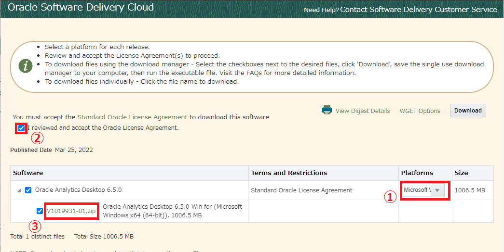
-
ダウンロードした zipファイル を解凍し、解凍したフォルダの中の exeファイル をダブルクリックしてインストールを開始します。インストールするフォルダ名は、日本語や空白を含まないように（例 C:\OAD ）してください。また、フォルダの中は空である必要があります。
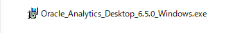
-
インストーラーが起動するので、 Browse ボタンをクリックして、日本語や空白を含まない名前のフォルダに変更します。ファルダの中は空である必要があります。次に、Install ボタン、または、Upgrade ボタンをクリックして、インストールを始めます。
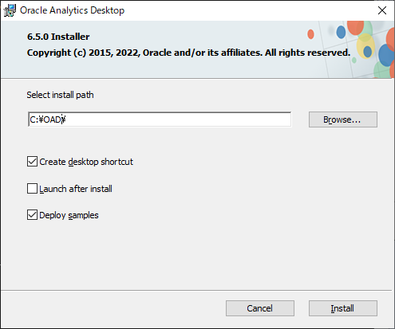
フォルダを選択します。
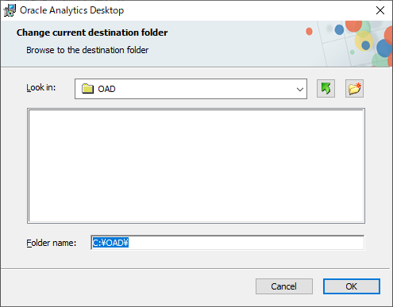
-
インストールが完了したら、 finish ボタンをクリックして、インストーラーを終了します。これで、Oracle Analytics Desktop をインストールできました。
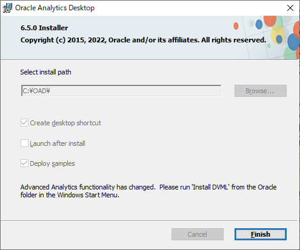
2. スクリプトをSQLワークシートから実行してビューを作成する
Oracle Analytics Desktop でデータを見える化するためのビューを作成します。
データにはAutonomous Databaseで提供されているサンプルデータのSHスキーマ（売上実績）を使います。ビューを作成することで売上データを分析しやすい大福帳形式のデータにすることができます。ビューを作成するSQLは、Database Actions のSQLから実行します。
-
メニュー画面から、インスタンスを選択してインスタンスのメニュー画面を表示します。
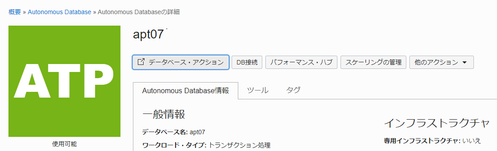
-
インスタンスのメニュー画面から データベース・アクション をクリックします。
-
Database Actionsの起動パッドで SQL をクリックします。
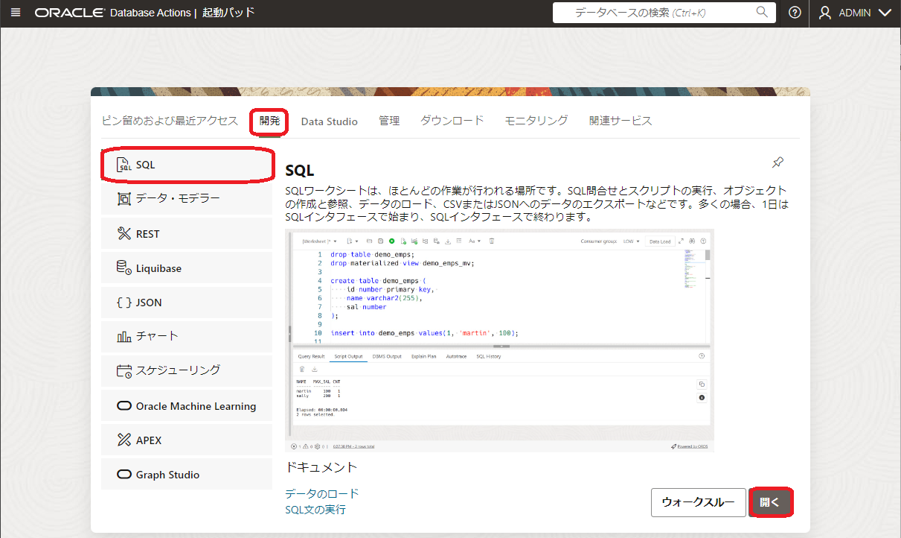
-
SQLワークシートが起動します。ワークシートに次のSQLを貼り付け、 スクリプトの実行 ボタンをクリックします。下のスクリプト表示に view DV_SH_VIEWは作成されました と表示されたらOKです。
これで、見える化するデータの準備ができました。1行目の drop文は再実行用で、ビューがなければ、エラーとなります。drop文のエラーは問題ありません。drop view DV_SH_VIEW; create or replace view DV_SH_VIEW as select P.PROD_NAME, P.PROD_DESC, P.PROD_CATEGORY, P.PROD_SUBCATEGORY, P.PROD_LIST_PRICE, S.QUANTITY_SOLD, S.AMOUNT_SOLD, X.CUST_GENDER, X.CUST_YEAR_OF_BIRTH, X.CUST_MARITAL_STATUS, X.CUST_INCOME_LEVEL, R.COUNTRY_NAME, R.COUNTRY_SUBREGION, R.COUNTRY_REGION, T.TIME_ID, T.DAY_NAME, T.CALENDAR_MONTH_NAME, T.CALENDAR_YEAR from SH.PRODUCTS P, SH.SALES S, SH.CUSTOMERS X, SH.COUNTRIES R, SH.TIMES T where S.PROD_ID=P.PROD_ID and S.CUST_ID=X.CUST_ID and S.TIME_ID=T.TIME_ID and X.COUNTRY_ID=R.COUNTRY_ID;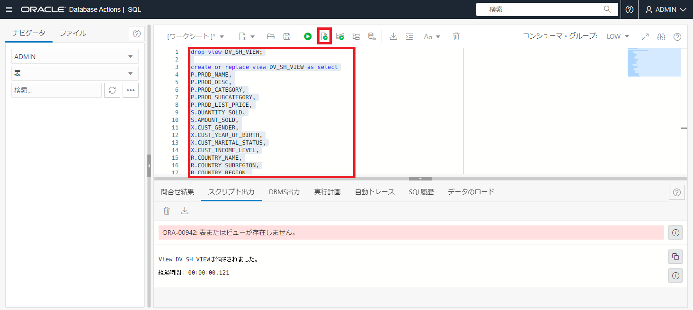
3. Oracle Analytics Desktop から Autonomous Database に接続し、データを見える化する
Oracle Analytics Desktop から Autonomous Database (ADB) への接続設定をつくります。ADBへの接続に必要なウォレットをまだダウンロードしていない方は、このページの上の前提条件のリンクからウォレットのダウンロード方法を参照してください。
-
Windowsスタートメニューから、Oracle > Oracle Analytics Desktop をクリックし、Oracle Analytics Desktop を起動します。
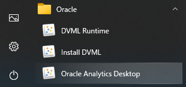
-
Oracle Analytics Desktop アプリケーションの右上の 作成 ボタンをクリックし、 接続 をクリックします。
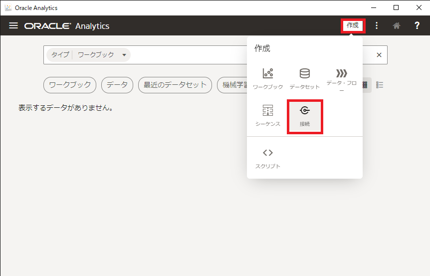
-
データセットの作成画面が表示されたら、 Oracle Autonomous Transaction Processing （または、Oracle Autonomous Data Warehouse を作成している場合は、Oracle Autonomous Data Warehouse ）をクリックします。
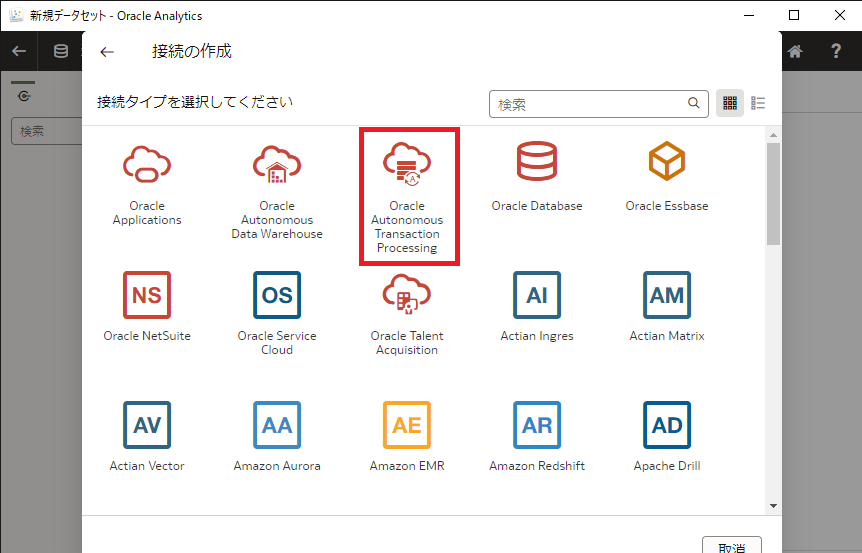
-
接続の作成画面が表示されたら、 ダイアログで、各項目に接続情報を入力します。
接続名 SALES_HISTORY 説明 （空白） クライアント資格証明 （事前にダウンロードしておいたウォレットzipファイルを選択） ユーザー名 ADMIN パスワード Welcome12345#
（インスタンス作成時に設定したADMINユーザーのパスワード）サービス名 atpXX_high
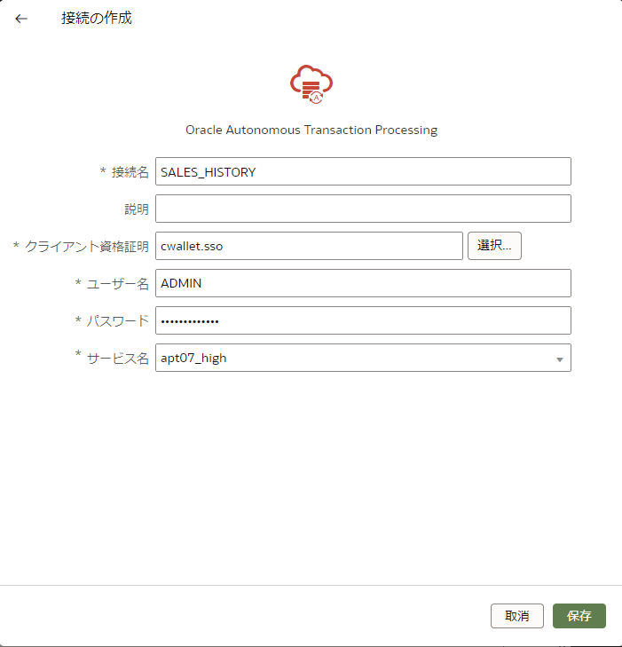 -
接続が成功すると、接続一覧に SALES_HISTORY が表示されます。
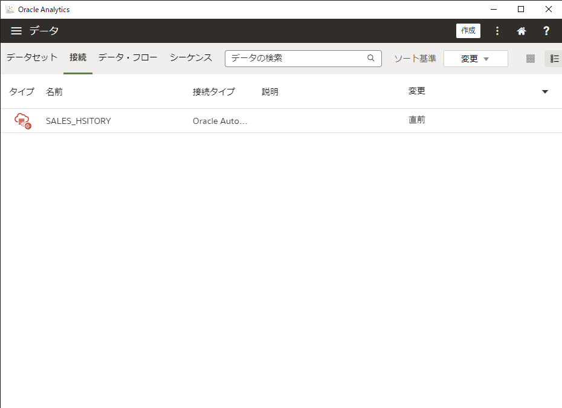
-
次に、見える化対象のデータセットを作成します。右上の 作成 から、データセット をクリックします。
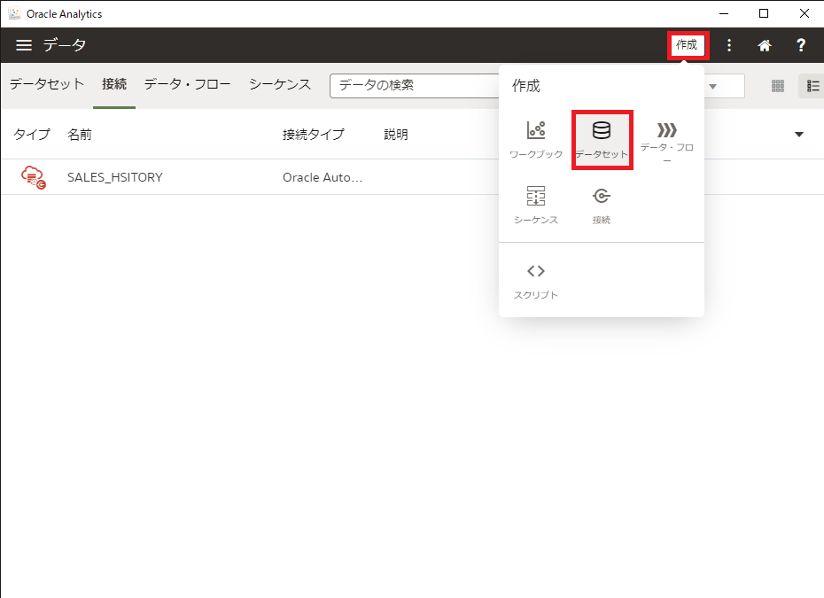
-
データセットの作成画面で、作成した SALES_HISTORY をクリックします。
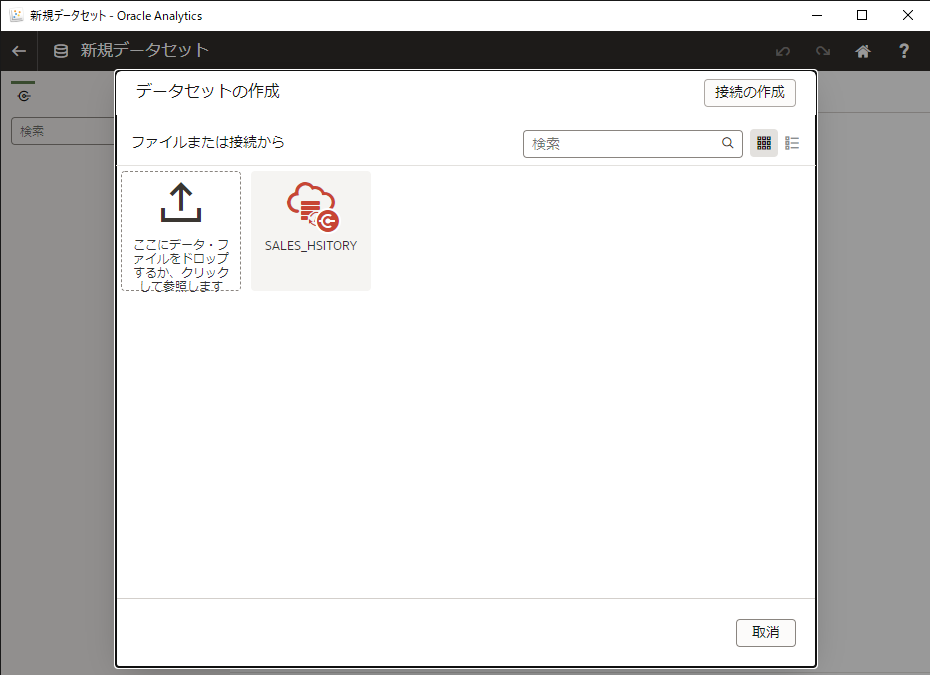
-
新規データセットの画面で、左のスキーマ一覧から、ADMIN スキーマを展開し、DV_SH_VIEW を右の画面にドラッグ＆ドロップ、または、ダブルクリックで、右側に追加します。
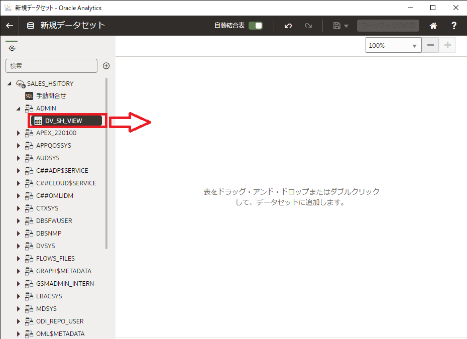
-
右のデータセットに追加されたので、右上の保存マークをクリックし、SALES_HISTORY と名前をつけて、OK をクリックします。
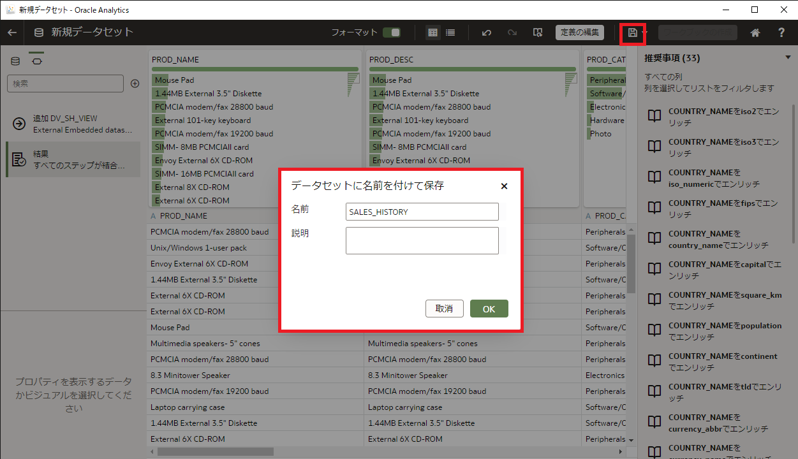
-
10秒ぐらい待つと、データセット画面の右上に、ワークブックの作成 ボタンが現れるので、クリックします。ワークブックは、実際にデータを見える化するダッシュボードになります。
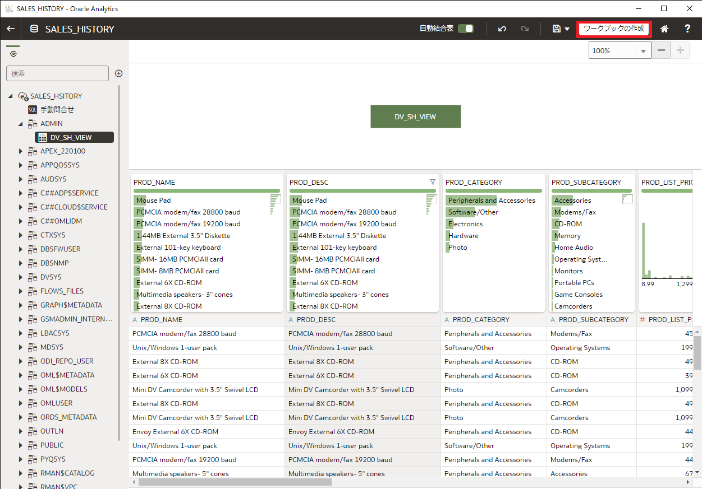
Note
データセット画面一覧からデータセットを選ぶ、または、はじめに画面に戻り、作成からワークブックを選んでからデータセットを選択してもワークブックを作成できます。
-
新規ワークブック画面に変わり、左に SALES_HISTORYビュー の列情報が表示されるので、SALES_HISTORYビュー内の5つのデータ要素（ PROD_NAME、PROD_CATEGORY、QUANTITY_SOLD、AMOUNT_SOLD、CALENDAR_YEAR）を複数選択（Ctrlキーを押しながらクリック）し、画面の右側にドラッグ＆ドロップします。
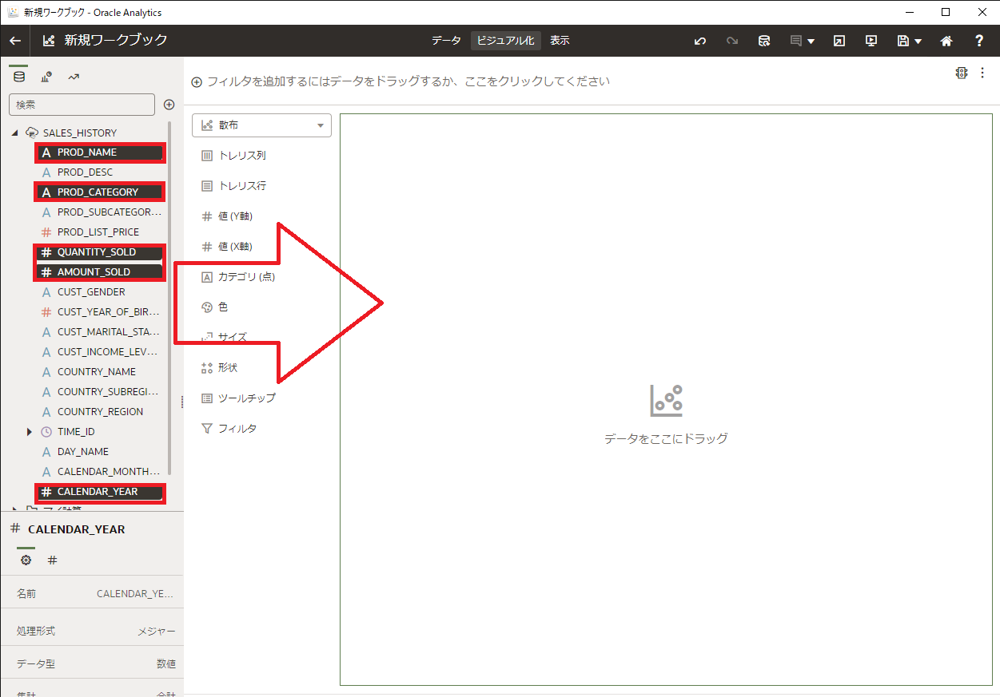
-
このデータにもとづいて、Oracle Analytics Desktop はデフォルトのグラフを選択しました。項目が自動的に配置されます。この例では、 Oracle Analytics Desktop はグラフに散布図を選択しました。グラフのドロップダウンメニューをクリックして、他の数十種類のグラフの中からお好みのグラフを選択できます。
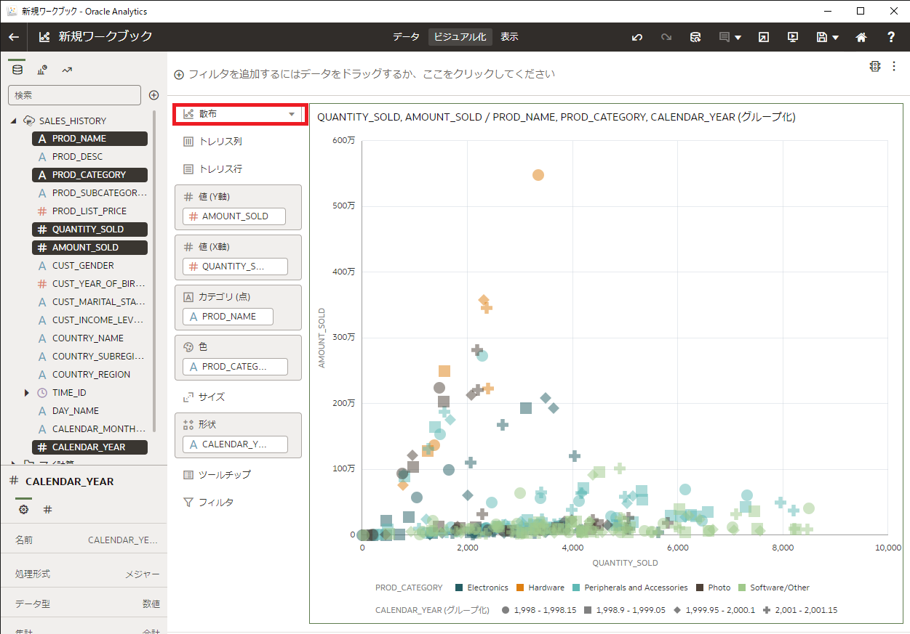
グラフの種類を積み上げ棒に変更すると、次のようなグラフになります。
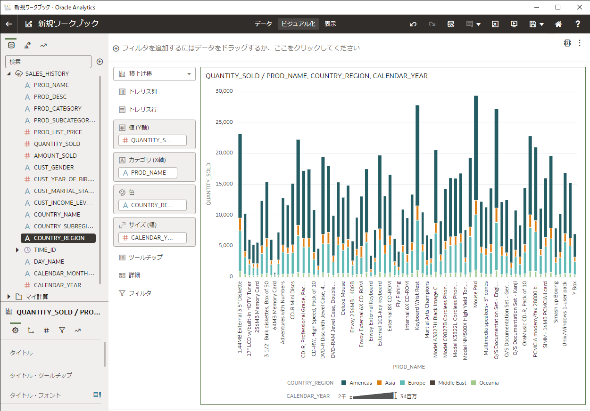
-
項目の配置は、ドラッグ＆ドロップすることで自由に変更できます。PROD_CATEGORY と CALENDAR_YEAR の配置をドラッグ＆ドロップで入れ替えます。そうすると、配置にあわせてグラフが変わります。
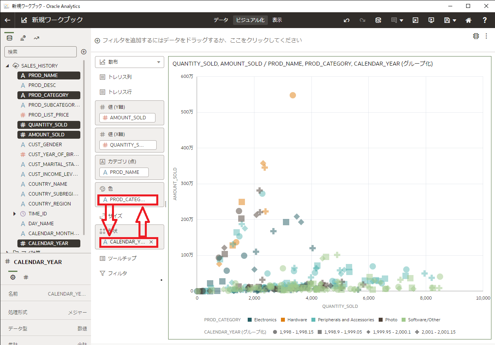
項目を入れ替えると、それにともなってグラフが変わります。
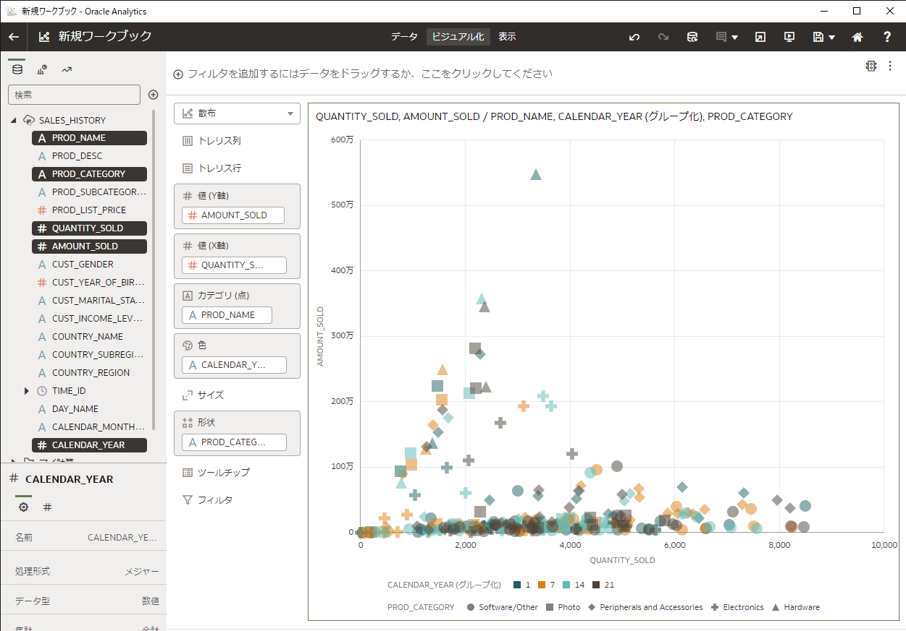
Note
項目の追加・削除もマウスで操作できます。また、別の項目セットを画面右側にドラッグ＆ドロップすれば、同じ画面にグラフを追加できます。
-
必要に応じて、このワークブックを保存できます。画面右上の 保存マーク をクリックし、保存 をクリックすると、プロジェクトの保存ダイアログが表示されるので、プロジェクト名を入力して保存をクリックします。プロジェクトが保存されたというメッセージが表示されたらOKです。保存されたワークブックは、再度、開くことで、同じグラフを表示できます。
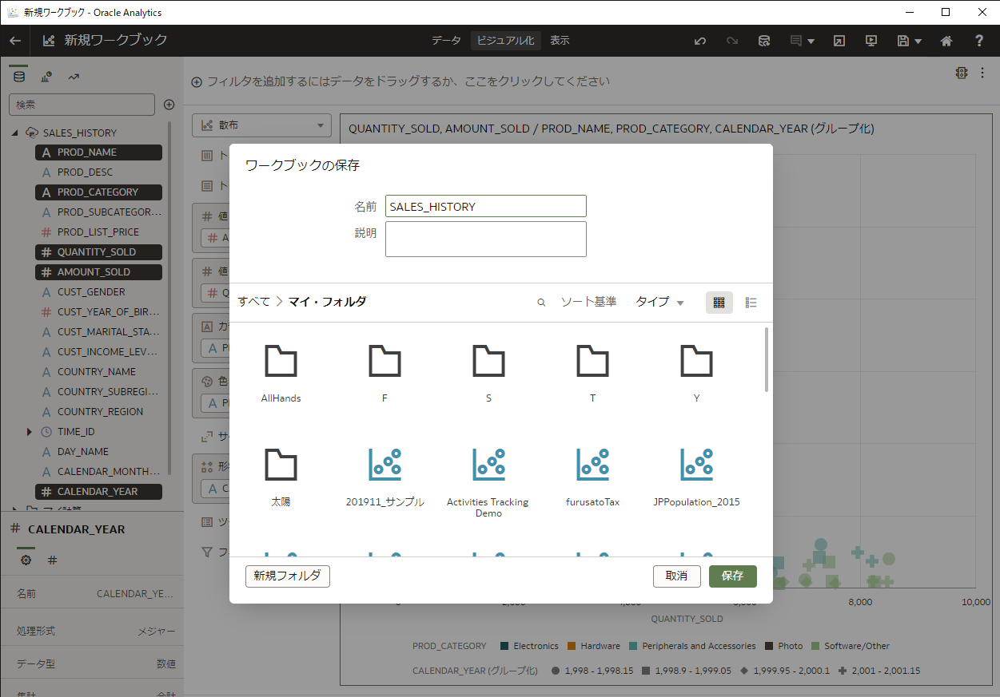
以上で、この章は終了です。
次の章にお進みください。